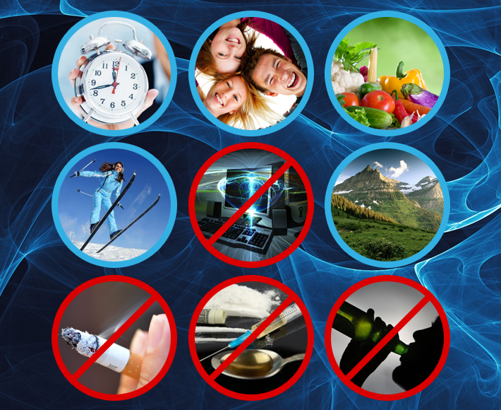

- главная
- здоровье
+ 7 (495) 64-111-63
info@vilovit.ru
Стержень Виловит® Источник Вашего Долголетия!
Здоровье в нашей жизни
Каждый из нас знает о том, что главное в жизни это здоровье и без него не будет полноценного счастья. Здоровье организма зависит от многих факторов, таких как экология, правильное питание, здоровый образ жизни и многое другое. В современном мире мало кто уделяет особое внимание своему здоровьюдо тех пор, пока организм не подаст признаки заболевания. Особенно сложно это дается в крупных городах, где экология, питание и образ жизни не лучшего качества. А с возрастом, загрязнение организма только растет. Но если уделять больше внимания факторам, влияющим на здоровье, до проявления заболевания, то организму легче будет справляться с недугами и крепче будет иммунитет.
Мы выделяем следующие причины возникновения болезней:
Окисление Свободными радикалами
Активные формы кислорода это первопричина хронической усталости, нарушения обменных процессов, окисления и разрушения клеток организма, преждевременного старения и множества заболеваний. Условия жизни таковы, что с возрастом количество свободных радикалов в организме постепенно растет. В то же время антиоксиданты, предназначенные для борьбы со свободными радикалами, все реже поступают к нам в организм с пищей.
Учеными установлено, что из-за чрезмерного развития числа свободных радикалов в организме человека, может возникнуть более 80 видов болезней.
Сокращение Клеточной воды
Вода является необходимым элементом для поддержания жизни человека. Клеточная вода служит своеобразным строительным материалом для самообновления организма человека, с помощью, которого происходит обмен питательных веществ. С возрастом клеточная вода уменьшается, а с ее уменьшением организм подавляет функции органов, которые выводят воду из тела: кожа, лёгкие, почки и пищеварительная система. Поэтому потеря организмом воды является причиной старения и многих болезней человека.
Нарушение Пищеварения и обмена веществ
Пищеварение – важный процесс обработки и расщепления пищи, от которого зависит поступление питательных веществ. При изменении этого процесса нарушается обмен веществ. Обмен веществ (Метаболизм) это основа жизнедеятельности организма. Каждая клетка организма постоянно обновляется за счет питательных веществ, приносимых кровью. Поэтому можно сказать, что любые заболевания в разной степени сопровождаются нарушениями обмена веществ. При постоянном неправильном и некачественном питании возникают гарантированные проблемы с обменом веществ.
Водородная вода для здоровья
В японском институте воды удалось создать уникальное изделие «Магниевый стержень ВилоВит», которое объединяет два жизненно важных элемента «Воду» и «Антиоксиданты». Стержень ВилоВит способен в домашних условиях обогатить питьевую воду необходимым «водородом» (антиоксидантом).
Водородная вода имеет показатели близкие к внутренней среде человека, в результате она быстро усваивается органами и как следствие, улучшается их функционирование и регенерация.
Потребление водородной воды эффективно помогает: снять окислительный стресс, вызванный свободными радикалами; оптимизировать клеточную воду, утраченную с возрастом; нормализовать пищеварение и обмен веществ; вывести токсины из организма и др.
Здоровый образ жизни(ЗОЖ)
Официальная медицина в ее современном состоянии добилась значительных успехов в борьбе с различными болезнями. Но бывают сложные ситуации, когда человеческий организм остается невосприимчивым к лекарственным препаратам и лечебным процедурам. Альтернативой методам официальной медицины представляется следование правилам здорового образа жизни (ЗОЖ). Они включают в себя много рекомендаций, как поддержать естественное для человека здоровое состояние организма и преодолеть болезни, если таковые имеют место.
Что такое ЗОЖ?
Под здоровым образом жизни подразумевается такая система мероприятий и поведенческих принципов, которая способствует максимальному укреплению здоровья и активизации скрытых резервов организма. Составляющих в данной системе очень много. Это и культура движений, закаливающие процедуры, умеренность в привычках, соблюдение принципов правильного питания, оптимального режима, борьба с вредными для организма привычками. Следование ЗОЖ направляет человека к действиям, в результате которых осуществляется профилактика заболеваний, укрепляется иммунная система и организм поддерживается в максимально здоровом состоянии.
Что такое профилактика заболеваний?
Профилактика заболеваний – это меры по борьбе с причинами возникновения болезней, предполагающие их своевременное предупреждение. Различают несколько уровней профилактики:
к первичной профилактике относятся действия, нацеленные на устранение причин, влияющих на возникновение заболевания;
к вторичной профилактике следует отнести меры по предупреждению развития уже обнаруженного заболевания;
третичная профилактика занимается предупреждением рецидивов болезней на фоне выздоровления.
В системе ЗОЖ большое значение имеет направленность на профилактику первичного уровня.
Что такое иммунитет организма человека?
Под понятием иммунитет подразумевается способность организма к защите от агрессивных факторов внешней среды, включающих воздействие болезнетворных бактерий, вирусов, грибков и других вредных организмов. Организм с нарушенной иммунной системой гораздо чаще подвержен инфекциям, так как не способен к эффективной самозащите.
Что означает вести здоровый образ жизни?
Человек, который умеет вести здоровый образ жизни, обладает знаниями о полезных и вредных для организма действиях, может волевым усилием проявлять самодисциплину, наладить оптимальный режим труда и отдыха, регулярно проводить оздоровительные мероприятия и правильно питаться.
Полезные советы по здоровому образу жизни.
Начать знакомство с системой ЗОЖ можно в свободной последовательности, подробнее останавливаясь на звеньях, вызывающих индивидуальный интерес. Общие советы включают такие положения:
Развивайте самодисциплину. ЗОЖ основывается на систематическом соблюдении оптимального для здоровья режима. Нельзя позволять себе расслабляться, ведь усилия направлены на укрепление самого ценного, что у нас есть – здоровья.
Прислушивайтесь к своему организму. Не существует готовых универсальных рецептов оздоровления, так как физические и психические особенности организма индивидуальны. Доверяйте больше собственным ощущениям и опыту.
Правильный режим дня.
Соблюдайте правильный распорядок дня. Организм хорошо себя чувствует в гармоничном чередовании труда и релаксации. Здоровье во многом зависит от полноценного сна и отдыха. Они являются не роскошью, а непременным условием нормального функционирования всех систем организма.
Качественный сон – это важнейший фактор сохранения физического и психического здоровья. Особенное значение он имеет в режиме детей и подростков школьного возраста, так как должен составлять не менее 10 часов. Людям пожилой возрастной группы после 65 лет достаточно спать 6 часов, а трудоспособное население от 25 до 55 лет хорошо себя чувствует при 8-часовом ночном отдыхе. Хорошее настроение после сна – это показатель здоровья. Здоровый крепкий сон способствует укреплению иммунитета, так как во время отдыха у человека повышается уровень мелатонина.
Правильное питание и диеты.
ЗОЖ невозможно представить без соблюдения принципов здорового питания. Наш организм – это то, что мы едим. Скудный рацион питания приводит к серьезным нарушениям в организме. В наши дни многие люди посвящают свободное время занятиям спортом, для них особенно важны принципы здорового питания. Те, кто хочет улучшить внешний вид, понизить вес, нарастить мышцы, должны тщательно подбирать ежедневный питательный рацион и составлять меню на разные временные отрезки.
Одним из основных принципов в питании по системе ЗОЖ является умеренность в употреблении пищи. У здорового человека в организме хорошо функционирует система саморегуляции, позволяя определять необходимые объемы пищи. Нормальное питание должно содержать белки, от выработки из них иммуноглобулинов зависит иммунитет. Вот почему важно включать в рацион мясо, рыбу, молочные продукты, орехи.
Полноценное питание способствует поддержанию здоровья в нормальном состоянии до преклонного возраста и предотвращению заболеваний, связанных с возрастными изменениями в организме.
Для повышения обмена веществ рекомендуется использовать магниевый стержень, при помощи которого изготавливается живая вода, обогащенная водородом.
Занятия спортом.

В наши дни многие люди активно включают в свою жизнь занятия каким-либо видом спорта, посвящая ему свободное время на протяжении всей жизни. Физическая культура должна стать центром системы ЗОЖ, так как приносит огромную пользу для поддержания организма в здоровом состоянии.
Люди, регулярно дающие своему организму физические нагрузки, способствуют улучшению работы лимфатической системы, отвечающей за вывод токсических веществ из организма. Статистика показывает, что люди, регулярно уделяющие время спорту, болеют на 25% меньше, чем все остальные. В занятиях с физическими нагрузками рекомендуется сохранять умеренность. Не всем людям принесут пользу профессиональные спортивные тренировки. Принципы ЗОЖ строятся на небольших (от получаса до часа в день) спортивных занятиях.
Какие спортивные упражнения предпочесть для сохранения здоровья?
Каждый человек, решивший следовать системе ЗОЖ, должен включить в свой распорядок дня утреннюю зарядку. Этот минимум упражнений надо сделать привычкой, вместе с ежедневными водными процедурами, так как известно, что вода – источник здоровья. В комплекс упражнений обязательно должны входить отжимания и задания для поддержания в тонусе брюшного пресса, так можно улучшить работу легких, сердца, желудочно-кишечного тракта и мочеполовой системы.
Очень полезны для здоровья упражнения в воде, так как мягко тренируют все системы организма. Женщинам можно порекомендовать занятия танцами, дающими нагрузку на все группы мышц. Мужчины традиционно положительно относятся к занятиям групповыми видами спорта: футболом, баскетболом и волейболом. В упражнениях на накачивание мышц нельзя проявлять чрезмерность. Правильно организованное и проведенное физкультурное занятие не должно доводить человека до утомления. Вы должны в конце тренировки почувствовать релаксацию, физическую и психическую.
Регулярные занятия физкультурой помогают человеку в самодисциплине, сохранении здоровья и позитивного настроя.
Психическое здоровье
Здоровый образ жизни подразумевает сохранение положительного психоэмоционального состояния. Это понятие включает в себя эмоциональный самоконтроль, позитивный умственный настрой, гармонию духовного и физического развития. Только человек со здоровой психикой в состоянии реализовать данные ему от природы возможности, преодолевать стрессы, развивать себя духовно и физически, приносить пользу людям.
Не поддавайтесь унынию
Как показывают исследования, позитивно настроенные в эмоциональном отношении люди меньше болеют, чувствуют себя счастливыми, творчески себя реализуют. Веселые и оптимистически смотрящие на жизнь люди более успешны во всех сторонах жизни. ЗОЖ рекомендует всем больше веселиться, с юмором относится к сложным проблемам, так как подобное поведение поддерживает организм в здоровом состоянии.
Опрошенные, учеными из Carnegie Mellon University, люди (193 человека) на предмет различных эмоций были подвергнуты вирусному воздействию. У кого оказалось больше позитивных эмоциональных проявлений, показали хорошую сопротивляемость к возникновению заболеваний.
Старайтесь меньше нервничать
«Учитесь властвовать собою!» - эти строчки А.С. Пушкина хорошо помнить всем людям, подверженным воздействию длительных стрессов. Мишенью затяжных стрессов становится иммунная система. Негативные гормоны при стрессе подавляют гормоны, отвечающие за сохранение здоровья. Преодолев стресс, вы победите раздражительность, лишний вес и плохое самочувствие.
На устойчивость иммунитета негативно влияет апатичное и равнодушное состояние. Американские исследователи выяснили, что люди, подверженные депрессиям, имеют пониженный иммунитет и чаще болеют вирусными заболеваниями.
Медитация – путь к здоровью
Напряженный ритм жизни современного человека подвергает его организм постоянному стрессу. От этого положения вещей невозможно уйти, но нужно постараться сохранять душевное спокойствие во всех ситуациях. Хорошим средством для победы над стрессами является медитация. Есть мнение, что это не наша духовная традиция. Но при изучении медитативных техник становится ясно, что это универсальное средство для сохранения психического здоровья и организации спокойного состояния ума. Молитвенные практики тоже можно отнести к медитации. Успокойте свой разум и дух, чтобы быть здоровыми.
Результаты исследований ученых, появившиеся на страницах журнала PsychosomaticMedicine в 2003 году, показали, что занимавшиеся в течение двух месяцев медитацией люди значительно повысили антитела против вируса гриппа в организме.
Потребление витаминов и полезных элементов
Витамины необходимы для нормального функционирования нашего организма. Редко рацион питания современного человека способен содержать все нужные витамины. Без употребления витаминных комплексов для компенсации недостатка витаминов и минеральных веществ не обойтись. Организм должен получать витамин D, содержащийся в таких продуктах, как яйца, молоко и некоторые сорта рыб. Важность употребления витамина С для здоровья общеизвестна. Недостаток его в организме приводит к снижению иммунитета. Лучше всего усваивается витамин С из овощей и фруктов.
Противовирусным и противотоксическим действием обладает цинк, в большом количестве содержащийся в морепродуктах, пивных дрожжах и неочищенных зернах. Для восполнения недостатка витамина А в организме рекомендуется употреблять томатный сок.
Пробиотики на охране здоровья
Для поддержания организма в здоровом состоянии важно использовать в питании продукты, восполняющие недостаток полезных бактерий. Общее их название – пробиотики. Полезно знать, что репчатый лук, бананы, чеснок и артишоки являются пробиотическими продуктами.
Закаляйте свой организм
Система ЗОЖ активно использует водные процедуры, так как вода – источник здоровья. Совершайте прогулки на открытом воздухе, которые любят и дети, и взрослые. Культивируйте в вашей семье эту любовь, заложив принципы здорового образа жизни.
Без закаливания организма трудно представить выполнение положений системы ЗОЖ. Водные процедуры благотворно действуют на организм, так как укрепляют сердечно-сосудистую и нервную системы, активизируют обменные процессы.
Хорошо, когда с первых месяцев жизни ребенка приучают к закаливающим процедурам, самая простая из которых – это воздушные ванны. Начинать закаливание нужно с подготовки организма к процедурам, растирая тело сухим полотенцем в течение нескольких дней. Постепенно сухие обтирания можно заменить на влажные, начиная с температуры воды 36 С, затем ее понижая. Следующий этап в закаливании – это обливания. Лето – самое подходящее время для обливаний на открытом воздухе. Хорошо, когда водным процедурам предшествует зарядка.
Старайтесь пить больше чистой воды

Без воды было бы невозможно возникновение жизни на нашей планете. 80% тела человека составляет вода. Без пищи наш организм может обходиться довольно долго, больше месяца, а без воды всего несколько дней. Взрослому человеку в день нужно выпивать не менее двух литров воды, в этом случае из организма будут выводиться шлаки и токсины.
Реальность такова, что чистая и безопасная для здоровья вода доступна далеко не всем людям. Альтернативным способом получения полезной жидкости служит использование талой воды. При замораживании воды образуется лед, имеющий трехслойную структуру. В первую очередь процесс замерзания происходит в так называемой тяжелой воде при +3,80 С, содержащей дейтерий вместо водорода. Для организма она вредна, поэтому требуется сливать этот слой. Следующий по времени замерзания и температуре 0 С слой воды чистый и может употребляться человеком после размораживания. Третий слой льда обычно содержит всевозможные загрязнения, для употребления внутрь он непригоден.
Водородная вода с ВилоВит является лучшей жидкостью для Здорового Образа Жизни. Потому что, она активно участвует в процессах регенерации клеток, пищеварения, вывода токсинов, образовании энергии и раскисления организма. Благотворное воздействие доказано научными исследованиями.
Соблюдайте гигиену
Чистота – залог здоровья, об этом знают даже маленькие дети. Элементарное гигиеническое требование мыть чаще руки предохраняет наш организм от многих неприятностей. Большинство вредных микробов и бактерий уничтожаются, если руки мыть с мылом. Мытье рук способствует их точечному массажу, стимулируя точки, отвечающие за работу иммунной системы.
Старайтесь процедуру мытья рук проводить дважды за один раз, это дает повышенный антибактериальный эффект и даже предохраняет от простуды.
Откажитесь от вредных привычек
Следование принципам здорового образа жизни ставит человека перед необходимостью отказаться от вредных привычек.
Курение.
Курение – самая пагубная для здоровья человека привычка. Негативные последствия курения обширны: нарушение кровообращения в результате сужения сосудов, атеросклероз, инсульт, инфаркт, эндокринные нарушения, ослабление иммунной системы, преждевременной изнашивание организма и многое другое. Статистика показывает, что в среднем жизнь у курильщиков на 8 лет короче, чем у некурящих людей.
Алкоголь.
Употребление алкогольных напитков вызывает привыкание, так как они обладают наркотическим действием. Кроме того в организм с алкоголем попадает большое количество токсичных веществ, отравляя его изнутри.
В результате потребления алкоголя страдает кровеносная система, так как при этом разрушаются эритроциты. Ухудшается функционирование сердечно-сосудистой системы, повышается артериальное давление.
Сильно страдает от алкоголя пищеварительная система, негативные изменения происходят практически во всех ее органах. Половая, иммунная системы при частом употреблении алкогольных напитков выходят из строя. Эта вредная привычка несовместима с произведением здорового потомства.
При каждом приеме веществ, содержащих алкоголь, происходит гибель мозговых клеток. Если хотите быть здоровыми и жить дольше – откажитесь от этой вредной привычки.
Баня дарит здоровье
Старайтесь каждую неделю заканчивать банными процедурами. Этим вы повысите сопротивляемость организма простудам и вирусным заболеваниям. Горячий воздух сауны или русской бани укрепляет здоровье, способствует выведению шлаков из организма. Осторожно следует относиться к бане людям с повышенным давлением, болезнями сердечно-сосудистой системы и онкологическими заболеваниями.
Сделаем вывод
Следование положениям системы ЗОЖ не представляет особого труда и может помочь каждому человеку сделать первые шаги навстречу здоровью, активному образу жизни, крепкому иммунитету и радости от каждого прожитого дня.